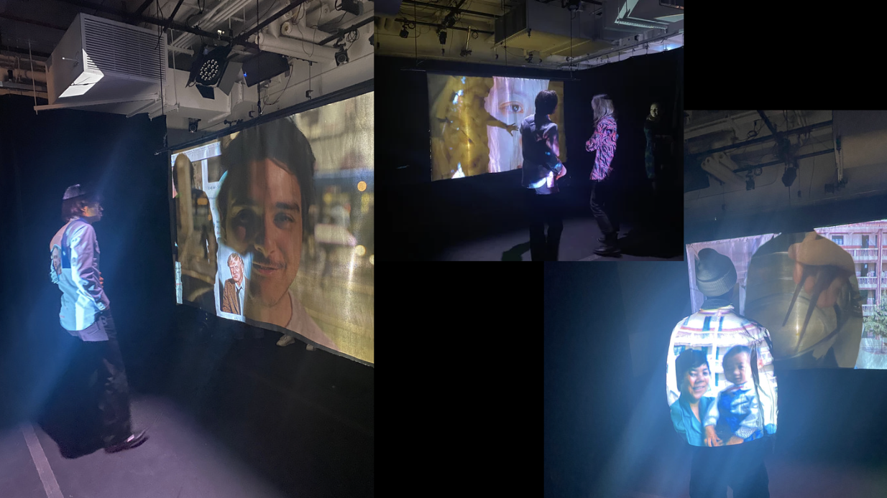

Frictions
Interactive Installation, Projection Mapping, Storytelling
Chen, Corona, Ibrahim, Tang, Yang
Moving is a rebirth and a death. The rhythms and customs of a new land push an immigrant to adapt, giving rise to a new way of carrying oneself while simultaneously letting go of another. The tension of these two, when held together by the thread of memory, creates a simple state of constant friction that can last for generations and can sometimes be exacerbated by inequality and racism and simple circumstance. The sparks produced by this friction, sometimes small and at times massive, can both light the way and burn it. Our installation holds this duality through the tension of a double projection. The audience can release the tension by casting their own shadow image, exploring a story in full by moving and shaping the projected light. The five stories we tell are part of our own observations and experiences of migration. Piece 1 by Zhenglong Yang ( 5 mins ) Special thanks to Zita Zhang Deeply mourn and remember Madam Gao Fenglan Piece 2 by Liyan Ibrahim ( 4 mins ) Special thanks to Suzan Sadek In solidarity with Palestine Piece 3 by Jorge Corona ( 7 mins ) Piece 4 by Junru Chen ( 5 mins ) Special thanks to Queenie Yeung Piece 5 by Christina Tang ( 5 mins ) Special thanks to Jesse Itskowitz and Normandy Sherwood